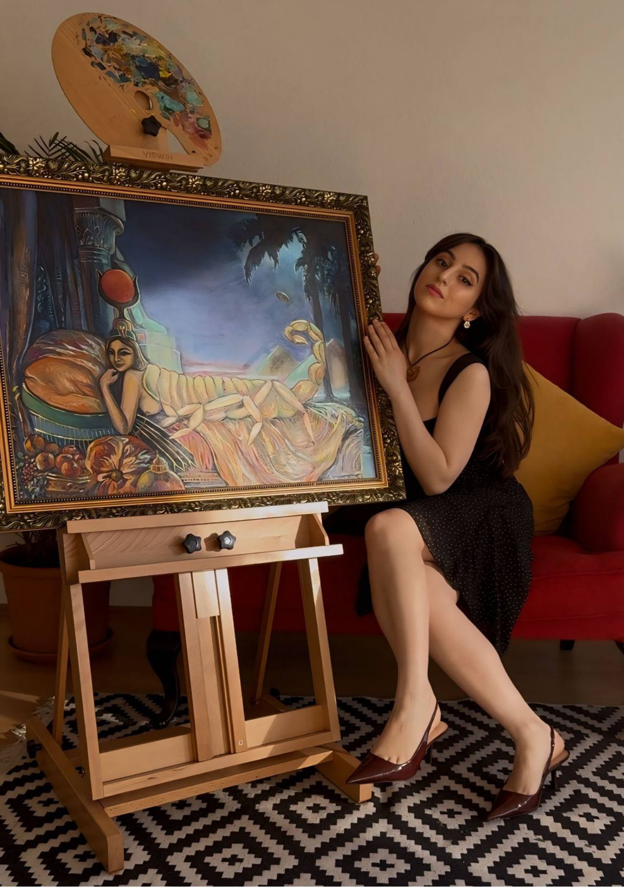

Series
Time Travel
Ancient civilizations, sacred landscapes and the figures who, according to the oldest traditions, shaped humanity's earliest chapters.
Fine Art Painter
Series
Ancient civilizations, sacred landscapes and the figures who, according to the oldest traditions, shaped humanity's earliest chapters.
Series



About the Artist
Günay Najafzade (b. 1998, Baku, Azerbaijan) is a multidisciplinary artist working in oil and mixed media. Holding degrees in geophysical engineering and climate science, Najafzade approaches the ancient world with both imagination and analytical rigor. Immersing herself in mythology, philosophy, and religious history, she became fascinated by a question that continues to shape her practice: what if the oldest myths are more than stories?
In ancient texts, gods appear not only as divine beings but as rulers, builders, astronomers and warriors. Through painting, Najafzade revisits these narratives, transforming her works into visual time machines that travel across millennia of human history.
Working on canvas as well as glass, fabric, and found objects, she creates images suspended between mythology and history, inviting viewers to look beyond accepted narratives and discover the world that is almost forgotten.
Based in Germany, her practice unfolds between Paris and Baku, cities that continue to shape her artistic and intellectual landscape.
Contact
For inquiries about available works, commissions or exhibitions: